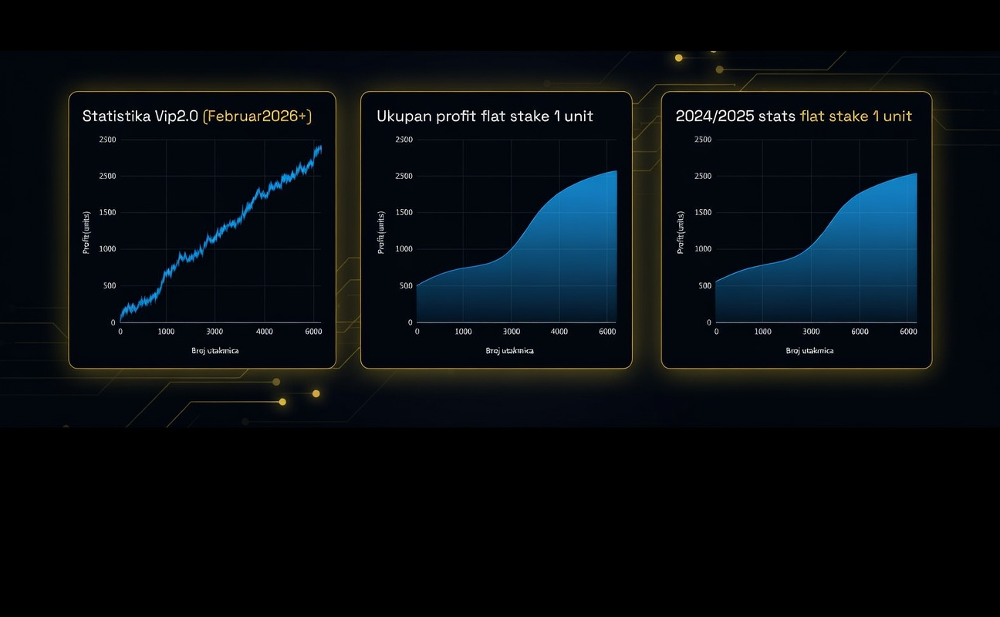
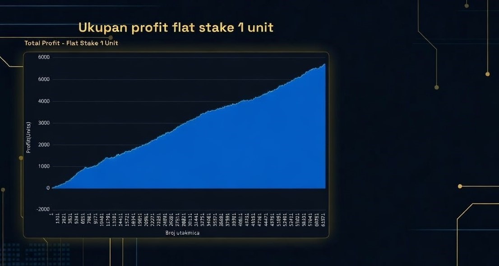
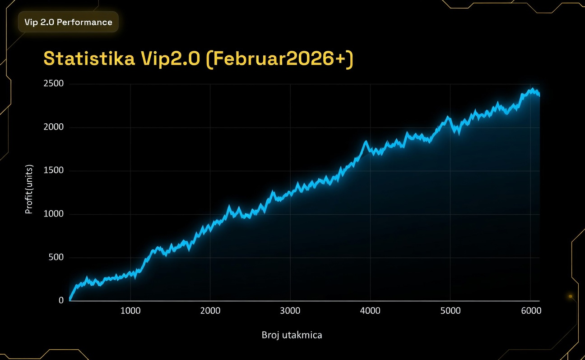
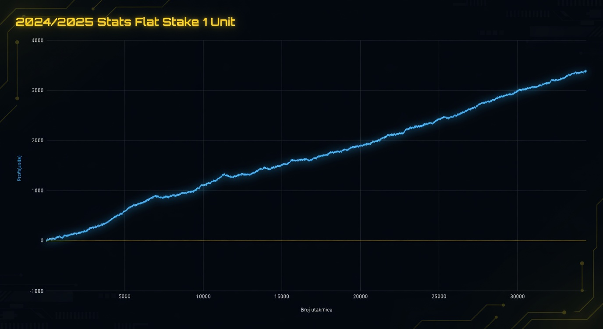
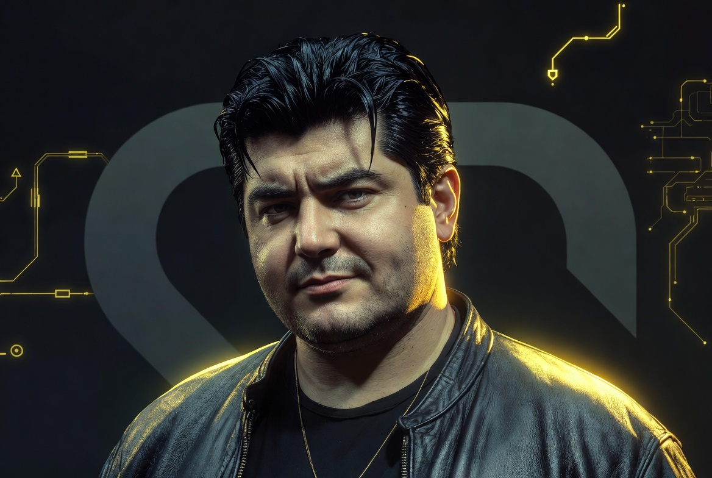
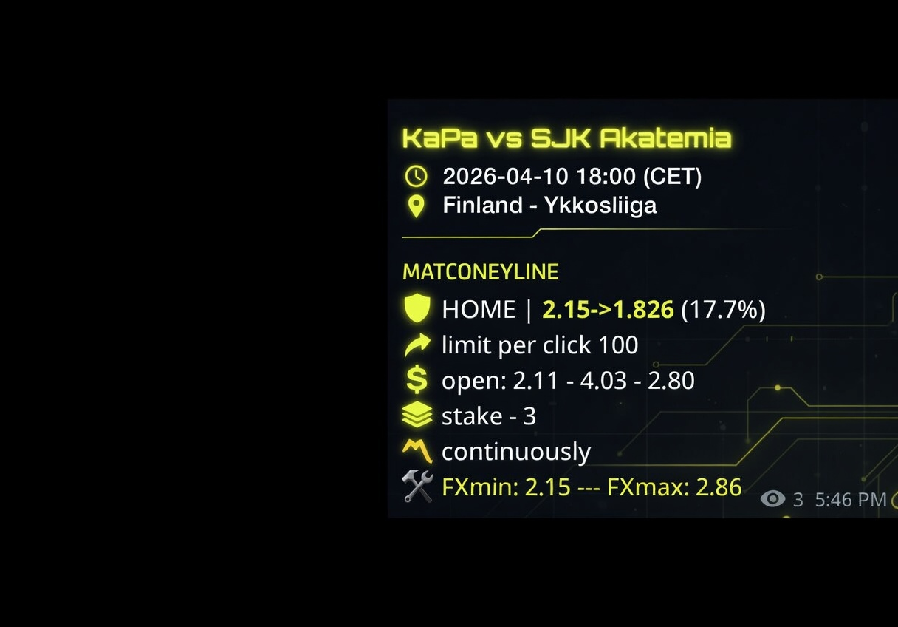

Samo Najbolji Sportski Tipovi
Dobrodošli na SNS tipove, ekipi čije samo ime uliva apsolutno poverenje u svetu klađenja. Posvetili smo naše živote da vama dostavimo informacije visokog kvaliteta pre nego što ih ostali dobiju. Otkrijte uz nas put do uspeha i pridružite se našoj sve većoj ekipi!


Dosadašnji učinak: Vaše poverenje, naši brojevi
Kod SNS tipova, transparentnost je ključna. Pogledajte našu detaljnu statistiku, kroz mesece, godine, kao i celokupnu. Nemamo šta da krijemo, slobodno pogledajte naše dosadašnje rezultate.
Kompletna dosadašnja statistika
Ovde je grafikon kompletne dosadašnje statistike od juna 2024. godine kada je grupa krenula sa radom pa do današnjeg dana. Na njemu se može videti da je trend prilično standardan, neki meseci mogu biti malo gori, neki malo bolji, ali sve u svemu može se očekivati standardan profit. U proseku do sada po mesecu bude oko 3000 različitih utakmica.
Na grafiku je računato kao da je profit za standardan ulog od 1 unit po utakmici.

Profit za novu grupu Vip2.0
Od Februara 2026. godine smo uveli neke novine u našem servisu, pa su tako uz svaku utakmicu dopisani i ulozi kao i minimalne kvote po kojima treba da se odigra utakmica. Prosečan ulog po utakmici je malo manji od 4 unita pa u skladu sa tim treba da se posmatra i ovaj grafikon u odnosu na ostale na kojima je fiksan ulog po utakmici od 1 unit. Ulozi su napravljeni tako da je teoretski nemoguće da se izgubi bankroll od 500 unita.

Profit za prethodnu sezonu
Pošto smo menjali pristup u različitim sezonama, samim tim su i statistike malo drugačije. Na početku nismo ni znali tačno kako će izgledati naš put, pa je bilo i dosta haotičnije, ali to ne znači da nećemo svakako objaviti celokupnu statistiku od početka pa do danas. Takođe postoje i objave za svaki mesec ponaosob na našem diskord kanalu.

Ekipa uspešna u svakom biznisu koji je ikada započela!
Dobrodošli na SNS tipove gde znanje pretvaramo u profit.
Veske tips
Veske je još u mladosti pokazivao ambiciju za uspehom i veliku želju za neradom. Na sve strane je tražio ljude koji bi mu pomogli u te dve misije. Upravo zato tipove šalje isključivo vikendom, pa pretplata kod njega znači notifikacije od petka u 20h do nedelje u 20h. To ne znači da će faliti tipova, jer se zna da je tada najviše utakmica. Veske vam obećava plus svakog meseca i minimum 500 različitih utakmica za mesečnu pretplatu od 60 evra.

Hermano tips
Hermano je još kao mlad preduzetnik pokazao veliki talenat za biznis i povezivanje sa ljudima širom sveta. Danas iza sebe ima uspešne poslove i široku mrežu saradnika, posebno na Balkanu. Upravo zato je njegova pretplata fokusirana na Balkan, a cena je simbolična — samo 20 evra za 30 dana. Hermano vas očekuje u svojoj grupi — pretplatite se već danas i pristup počinje odmah!
Merrybell tips
Naš najmoćniji čovek koji ne želi da se eksponira previše pa je odlučio da se predstavi pod pseudonimom Merrybell tips. Oduvek su ga interesovali samo ozbiljni poslovi gde se sa malim ulogom mogu dostići velike zarade. Njegova pretplata će slati samo najsigurnije tipove za ljude koji vole malo jače uloge. Ova pretplata je za ljude koji žele da imaju malo jače uloge i bez previše filozofije. Utakmice koje on šalje su isfiltrirane tako da imaju ogroman value i veliku prolaznost.

Primer obaveštenja za utakmice kako bi vam dolazila
Pitanja i odgovori
Signale koji su isfiltrirani na osnovu statistike koja ima već 70k utakmica u bazi i koji su profitabilni iz meseca u mesec. Najgori mogući mesec se završava oko nule.
Detaljnu statistiku po različitim parametrima i mesec dana u VIP-u u kom bude oko 2000-3000 utakmica mesečno.
*Hermano tips 20 evra za 30 dana
*Veske tips 60 evra za 30 dana
*Merybell tips 60 evra za 30 dana
*Full VIP 100 evra za 30 dana
*Svaka pretplata važi 30 dana od trenutka pretplate i može se izvršiti bilo kog dana u mesecu
Signal stigne, ti uplatiš kvotu pre pada, u signalu će ti pisati i ulog i minimalna kvota na koju treba da igraš. Ulog prilagodi u zavisnosti od kvote(ukoliko je tvoja kvota mnogo veća od minimalne, možeš i da povećaš ulog) i to tako što ti stiže i maksimalna kvota. To je kvota preko koje treba da uložiš maksimalan ulog od 10 unita.
Tvoj početni budžet koji obezbeđuješ je 500 unit-a. Znači ukoliko imaš budžet od 1000 evra, jedan unit bi ti bio 2 evra. Ulog od 3 unita bi onda bio 6 evra, a ulog od 10 unita 20 evra. Sa ovakvim ulozima je teoretski nemoguće da bankrotiraš. Ti možeš na svoju ruku i da igraš dupli ulog na unit, ali preko toga ne preporučujemo.
Na statistici od preko 70000 utakmica, plus je oko 10% na standardan ulog. To znači da sa ovim prilagođenim ulozima bi plus trebalo da bude i veći od 10%. Ako bi npr od 2000 utakmica uspeo da odigraš 300 utakmica, tvoj očekivan plus bi bio recimo 150 unit-a ili oko 30% budžeta. Matematički je dokazano da se na velikom uzorku očekivani plus izjednačava sa realnim plusom.
U zavisnosti od perioda, broj različitih utakmica koje stižu je od 3 na sat pa do 50 na sat. Ti obično ne uspeš da odigraš sve, ali najviše utakmica ima subotom i nedeljom ujutru, ako bi samo tada uplaćivao npr od 9 do 13h svaki vikend, uspeo bi da uplatiš verovatno 300 utakmica bez problema uz još po neki dan koji bi igrao. Tako da je realno izvodljivo i 500 utakmica da se uplati, ali 300 bi bio neki minumum koji treba da planiraš i sa tim da očekuješ plus od oko 30% budžeta.
Ono što je bitno za odigravanje su:
*stake - ulog u unitima. Ako je bankroll 500 unita, stake 4 je 4 unita uloga na kvotu koja je stigla u obaveštenju.
*Home znači da treba da se igra na domaćina na početnu kvotu po ulogu koji je stigao u obaveštenju. Ukoliko je npr obaveštenje HOME | 3.62->2.99 na kvotu 3.62 je ulog koji je stigao u obaveštenju
*FXmin je minimalna kvota na koju treba da se igra i na nju je ulog 3 unita, jer je to minimalan ulog
*Ukoliko je kvota manja od FXmin samo preskoči utakmicu, nema potrebe da je igraš jer je na duge staze to neisplativo ili je marginalna zarada
*FXmax je kvota za koju je maksimalan ulog od 10 unita
*Ukoliko je kvota između FXmin i FXmax negde ulog treba da bude linearno izračunat između te dve kvote: Primer FXmin je 1.7, a FXmax je 2.4 i ukoliko imaš da odigraš na kvotu 1.9, ulog je 5 unita. Nije bitno da pogodiš tačan ulog, ali je bitno da imaš predstavu otprilike koliki treba da bude ulog. Ukoliko je na 1.7 ulog 3 unita, a na 2.4 je ulog 10 unita onda je otprilike na kvotu 1.8 ulog 4 unita, na kvotu 1.9 5 unita, na kvotu 2 6 unita, na kvotu 2.1 7 unita, na kvotu 2.2 8 unita, na kvotu 2.3 je ulog 9 unita i na kvotu 2.4 je ulog 10 unita. Te kvote su proračunate tako da je nemoguće da se bankrotira prema zakonima verovatnoće. To ne znači da je nemoguće da se padne ukoliko je ulog 10 unita, pa je zbog toga ulog od 10 unita 2% bankrola.